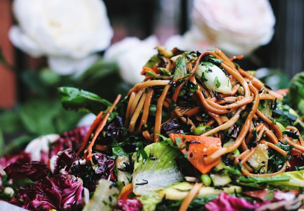

Avocado toast has become a very popular breakfast/lunch dish. The dish for popular even with those who do not consider themselves vegetarian or vegan. We made three delicious recipes that are an easy to make spin-off of the one and only original avocado toast.

A Sunday brunch is maybe one of my favorite moments of the week. Having this special time reserved for my family after a busy week of Teams school, zoom meetings is all I want, really. One of my favorite things in the world are waffles, who does not like waffles right? This recipe is delicious, easy, and healthy. When you combine fashionable oatmeal bowls, waffles on the side and family, you will have my kind of a special fun mix.
- by Michael Muso
- in Sport
- 52 Comments
Especially now working-out should be our major focus. Me as a chef who loves eating and making food, am very aware of working out. Everyday in the early morning I go out for a run. Getting my mind ang body awake for the day is really important for me. Breakfast is the next important on my daily agenda. I have a huge breakfast that is very nutritious and tasty. This recipe will hopefully inspire you to try it out yourself.
Salads are a good alternative meal on a hot summer day. However, even on a good cold winter night are good to enjoy a good salad. Many people think that salads are only cold veggies and a dressing on a side. This recipe will show you a different take on salads namely the warm salad. This recipe will hopefully inspire you to create your own warm salad for a winter night such as today.

- by Michael Muso
- in Lifestyle
- 87 Comments
Going to a wok restaurant is something we all do often. I personally went to this amazing vegan wok every other week. I love supporting other amazing chefs, however, this last year made that quite impossible. We mostly are leaning on ordering or the delivery of food. Let us be honest that takes away a part of the experience of going out. So, what if you would be able to make this great meal from Chefs from the ease from your house? We at &Chefs are glad to announce that we are working with amazing chefs from all over the country to deliver you with their favorite recipes that you could now recreate at home and enjoy them together with your family and friends. Starting with Eric Zhang from the vegan wok palace. We hope you enjoyed it as mush as we did. Of course, safely!
Sundays are my families baking day. My kids just love to bake, and they are always up for the job. We have tried and made many cookies and we have configured all our cookie recipes in a children’s baking book. With the launch of this amazing book, fun for kids and for adults. We decided to already give you a treat by giving you one of my boy’s favorite chocolate cookie recipe. We hope you enjoy making and eating them together with your family.